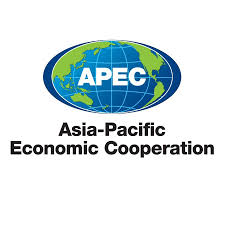
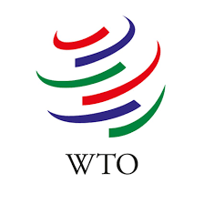
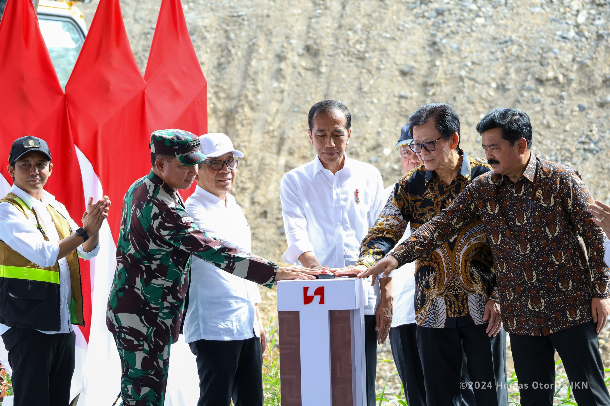
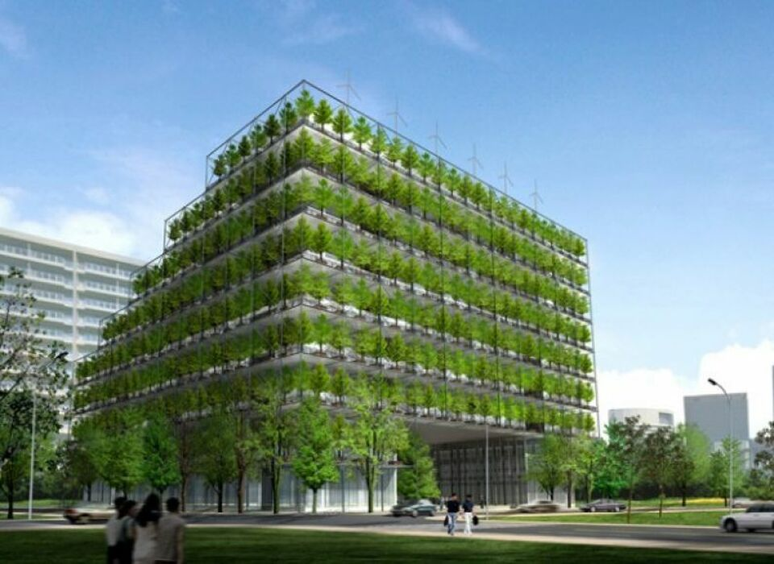

Kerja Sama Bilateral
Kerjasama Bilateral adalah hubungan antara dua negara yang
bertujuan untuk saling menguntungkan. Kerjasama ini terdiri
dari bidang ekonomi, perdagangan, pendidikan, budaya, dan
keamanan. Hal ini diwujudkan melalui perjanjian atau kesepakatan
tertulis, seperti perjanjian dagang atau pertukaran pelajar
yang dikenal sebagai "student exchange".
Contoh Kerja Sama Bilateral di Indonesia:
- Indonesia - Jepang
- Jepang membantu Indonesia membangun MRT dengan
memanfaatkan semaksimal pengalaman dan teknologi
Jepang

- Indonesia - Australia
- Australia memberikan program beasiswa Australia Awards
untuk pendidikan
- Beasiswa Australia Awards ditawarkan dari pemerintah
Australia kepada generasi pemimpin Indonesia berikutnya
untuk berkontribusi pada kemakmuran Indonesia yang terus
berkembang

- Indonesia - Korea Selatan
- Kerja sama teknologi dan perindustrian, Indonesia memperkuat
kerja samanya dengan Korea Selatan
- Bekerja sama membuat mobil listrik, sekaligus mendukung pembangunan
SDGs ke-7 yaitu "Energi Bersih"

Kerja Sama Regional
Kerja sama regional adalah kerja sama antara dua negara atau lebih yang berdekatan
secara geografis di suatu kawasan tertentu untuk mencapai tujuan bersama, seperti
meningkatkan ekonomi, menjaga stabilitas, dan menjalin hubungan baik. Contoh kerja
sama regional adalah ASEAN, AFTA (ASEAN Free Trade Area), APEC (Asia Pasific Economic Cooperation),
AFTA-CER, dan North American Free Trade Area (NAFTA).


Kerja Sama Multilateral
Kerja sama multilateral adalah bentuk kolaborasi internasional yang melibatkan tiga negara
atau lebih untuk mencapai tujuan bersama dalam berbagai bidang seperti ekonomi, politik,
sosial, dan lingkungan. Kerja sama ini berbeda dari kerja sama bilateral yang hanya melibatkan
dua negara. Contoh kerja sama multilateral adalah PBB, WTO, ASEAN, G20, dan APEC.



Kerja Sama Indonesia - Swiss
Kerja sama antar negara yang terkait dengan SDGs ke-17 yang saya pilih adalah kerja sama antara
Indonesia dengan Swiss. Indonesia dan Swiss bekerja sama untuk membangun "Green Building" yang
akan berada di kota Semarang. Mereka melakukan kerja sama ini melalui dukungan teknis, pengembangan
kurikulum, dan perluasan inisiatif program ke berbagai kota. Kerja sama ini mendukung pembangunan
infrastruktur berkelanjutan dan sejalan ddengan program yang lebih luas seperti pengembangan sumber
daya manusia (SDM) di sektor energi terbarukan dan penerapan standar bangunan hijau.
Indonesia dan Swiss membangun bangunan hijau dengan fokus pada standar yang berkelanjutan, efisiensi
energi, dan infrastruktur yang ramah lingkungan. Kerja sama ini melibatkan dukungan dari teknis Swiss
untuk program-program di Indonesia, seperti yang didukung oleh IFC, yang mendorong adopsi praktik
bangunan hijau nasional dan regional.

